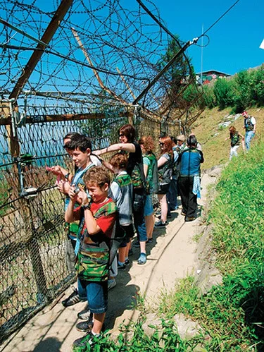
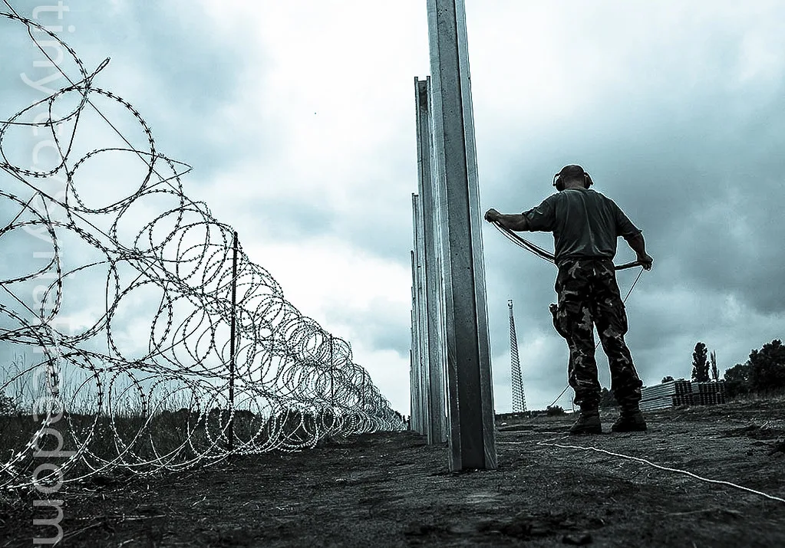

합참 "DMZ 폭발, 북한 지뢰 소행"…TNT·RDX 성분 검출
합동참모본부는 지난 비무장지대(DMZ) 내에서 발생한 폭발 사고와 관련해 재조사를 벌인 결과 북한이 매설한 지뢰에 의한 폭발일 가능성이 매우 높다고 밝혔다. 군은 폭발 지점이 군사분계선(MDL) 이남 약 10m 지점으로 확인됐으며, 현장 감식과 관계자 진술을 종합한 결과 우리 군이 매설한 지뢰일 가능성은 낮은 것으로 판단했다고 설명했다. 사고 발생 이후 유엔군사령부와 합동으로 진행된 이번 조사는 한 차례 중간 발표를 거쳐 이날 좀 더 구체화된 결론을 내놓은 것이어서 주목된다. 군은 그동안 폭발물 잔해와 인근 지형을 정밀 감식하는 데 상당한 시간을 들였다고 설명하며, 성급한 단정을 피하고 과학적 근거를 우선했다는 점을 강조했다.
군 당국에 따르면 사고 현장에서 수거한 방호장비와 잔해물을 분석한 결과 우리 군의 M14 대인지뢰에 쓰이는 테트릴 성분은 검출되지 않았다. 대신 북한군의 목함지뢰나 대인지뢰에 주로 사용되는 TNT와 RDX 계열 폭약 성분이 다량 검출된 것으로 나타났다. 군은 이 지역에 우리 군이 지뢰를 매설한 기록이 없다는 점도 함께 확인했다고 밝혔다. 군 관계자는 폭발물 성분 분석이 전문 감식 기관의 검증을 거친 결과라며, 자료의 신뢰성을 뒷받침하기 위해 추가 교차 검증도 병행하고 있다고 전했다.

이번 판단을 뒷받침하는 정황 증거도 함께 제시됐다. 군은 지난해 9월 사고 인근 지역에서 북한군이 매설한 지뢰의 흔적이 발견된 바 있다는 기록을 확보했다고 밝혔다. 또 사고 현장 인근에서 갈색 계열의 북한산 수지 대인지뢰로 추정되는 물체가 폭발 지점에서 약 1m 떨어진 곳에서 발견됐다는 목격자 진술도 확보한 것으로 전해졌다. 군은 이런 여러 정황을 종합할 때 북한 지뢰에 의한 폭발일 가능성에 무게를 두고 있다고 설명했다. 아울러 사고 지점 주변 지형과 식생 상태 등을 함께 조사해 지뢰가 매설된 시점을 역으로 추정하는 작업도 병행하고 있는 것으로 알려졌다.
군은 다만 이번 발표가 최종 결론은 아니라는 점을 분명히 했다. 폭발물 잔해에 대한 정밀 감식과 관련 기록 대조 등 추가 검증 절차가 남아 있으며, 최종 판단이 내려지면 이를 근거로 북한에 책임을 묻고 상응하는 조치를 취하겠다는 방침이다. 군 관계자는 사고 원인 규명 작업을 끝까지 투명하게 진행하겠다고 강조했다. 이와 함께 유사 사고 재발을 막기 위해 접경지역 전반에 대한 지뢰 탐지 활동도 강화하겠다는 방침을 밝혔다.

국회에서도 이번 사고를 둘러싼 논의가 이어지고 있다. 국방위원회는 사고 원인과 초기 대응 과정을 놓고 긴급 현안질의를 여는 등 진상 규명을 압박하고 있으며, 조사가 늦어진 배경을 두고 여야 간 공방도 계속되고 있다. 야당 일각에서는 초기 대응 매뉴얼이 제대로 작동했는지 따져봐야 한다는 지적도 나온다. 군 당국은 조사 지연 논란에 대해 정밀 감식에 필요한 시간이 소요됐을 뿐이라며, 성급한 예단보다 정확한 원인 규명이 우선이라는 원칙을 지켰다는 입장을 밝히고 있다.
이번 사고는 최근 DMZ 일대에서 북한의 지뢰 매설 정황이 잇따라 확인되고 있는 가운데 발생했다는 점에서 군 당국의 경계심을 한층 높이는 계기가 되고 있다. 군은 최종 조사 결과가 확정되는 대로 관련 내용을 공개하고, 재발 방지를 위한 경계 강화 방안도 함께 마련할 계획이라고 밝혔다. 접경지역 주민과 장병들의 안전을 확보하기 위한 후속 대책이 어떻게 마련될지에도 관심이 쏠린다.